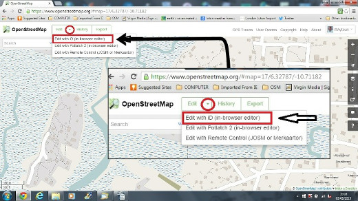
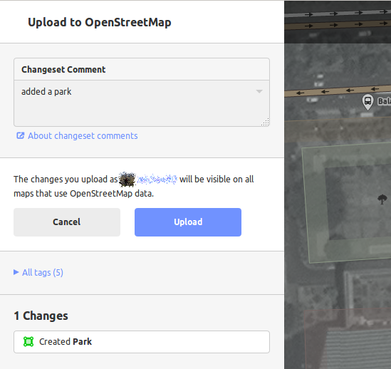

ID Editor Schnellstart¶
Der iD-Editor ist de facto ein Browser-basierter OpenStreetMap-Editor. iD ist schnell und einfach zu nutzen und erlaubt das Datenerfassen auf Grundlage von unterschiedlichen Datenquellen wie Satelliten und Luftbildern, GPS, manuellen Aufnahmen oder Mapillary.
Der iD-Editor ist ideal, um kleine und einfache Veränderungen durchzuführen, die nicht die fortschrittlichen Funktionen von JOSM (einem sehr leistungsstarken Karten-Editor) benötigen. Dieses Kapitel demonstriert die Grundlagen der Arbeit mit iD.
iD Editor starten¶
Der iD editor benötigt eine aktive Internetverbindung.
Öffnen Sie Ihren Browser, und gehen Sie zur OpenStreetMap-Webseite unter https://www.openstreetmap.org.
Login mit Ihrem OpenStreetMap-Konto.
Navigieren Sie in der Karte zu dem Bereich, den Sie bearbeiten möchten. Sie können die Karte durch Bewegung der Maus mit gedrückter linker Maustaste zu dem gewünschten Bereich bewegen.
Klicken Sie auf den kleinen Pfeil neben dem Edit Feld. Dann wählen Sie Edit with iD (in-browser editor).

- [1] Feature-Panel bearbeiten: Dieses Bedienfeld zeigt Tags des Objektes
auf der Karte ausgewählt. Sie können Tags aus diesem Bereich hinzufügen oder bearbeiten.
[2] Tools: In diesem Bereich werden grundlegende Bearbeitungswerkzeuge angezeigt.
[3] Map panel: Diese Tafel beinhaltet die unterschiedlichen Konfigurationsfunktionen:
- [4] Information panel: Diese Tafel zeigt unterschiedliche Informationen wie
die Maßstabsleiste und welche Nutzer zu einem Areal beigetragen haben.
Konfiguration des Hintergrundlayers¶
Klicken Sie den Background settings-Button oder nutzen Sie shortcut key b.


Um die Helligkeit (brightness level) zu ändern, klicken Sie auf eine der Boxen. Die verfügbaren Stufen sind 100%, 75%, 50%, und 25%

Sie können auch die Hintergrundebene basierend auf Ihrem gewünschten Kachelanbieter ändern (Standard ist Bing Aerial Imagery).
Sie können Ihre eigenen Kartenkacheln hinzufügen, indem Sie auf Custom klicken. Wenn Sie z. B. ein Feldpapier [1] hinzufügen möchten, klicken Sie auf Custom und dann auf das Lupensymbol (Suchen), um das folgende Fenster zu öffnen:

Geben Sie Ihre FieldPaper-Snapshot-URL ein, die ungefähr so aussehen könnte: http://fieldpapers.org/snapshots/cqhmf2v9#18/37.80593/-122.22715
Um GPS-Tracks von Ihrem Computer (GPX-Format) anzuzeigen, ziehen Sie die GPX-Datei in den iD-Editor.
Um OpenStreetMap GPS-Tracks zu aktivieren, klicken Sie auf das Feld. In der Abbildung unten werden öffentliche GPS-Tracks in verschiedenen Farben dargestellt, die die Richtung der Reise anzeigen.

If there is imagery offset, it can be corrected by clicking Fix Alignment.

Klicken Sie auf die Navigationsschaltflächen, um die Bilddaten zu verschieben. Klicken Sie auf die Schaltfläche Zurücksetzen, um zur Standardposition zurückzukehren.
Hinzufügen von Punkten¶
Drücken Sie auf den Point-Button, um einen neuen Punkt hinzuzufügen. 
Ihr Mauscursor wird sich daraufhin in ein (+) umwandeln. Jetzt klicken Sie auf eine Position, die Sie kennen um einen Ort hinzuzufügen. Falls Sie zum Beispiel ein Krankenhaus in Ihrer Gegend kennen, klicken Sie auf die Position des Krankenhauses.

Beachten Sie, dass ein neuer Punkt hinzugefügt wurde. Zur gleichen Zeit wechselt das linke Feld zu einem Formular auf dem Attribute für das neue Objekt ausgewählt werden können. Klicken Sie Hospital Grounds, um den Punkt als Krankenhaus zu klassifizieren.

Das Formular kann weiter genutzt werden, um zusätzliche Informationen zu ihrem Punkt hinzuzufügen wie zum Beispiel Krankenhausname, Anschrift und/oder andere Informationen. Beachten Sie, dass jedes Merkmal andere Optionen hat je nachdem welches Kennzeichen aus dem Featurefeld gewählt wurde.
Wenn Sie einen Fehler machen, z. B. eine falsche Position eingeben, können Sie den Punkt an eine neue Position verschieben, indem Sie die linke Maustaste auf dem Punkt gedrückt halten und ziehen. Wenn Sie Ihren Punkt löschen möchten, klicken Sie die linke Maustaste auf dem Punkt, aktivieren Sie das Kontextmenü, indem Sie mit der rechten Maustaste klicken und dann auf die Schaltfläche klicken, die wie ein Mülleimer aussieht.

Ein im iD-Editor erstellter „Punkt“ ist eigentlich ein eigenständiger „Knoten“ mit einem Satz von „Tags“.
Zeichnen von Linien¶
Um eine neue Linie hinzuzufügen, klicken Sie auf den Line-Button. 
Der Mauszeiger ändert sich in ein Plus-Zeichen (+) . Suchen Sie eine Straße, die nicht auf der Karte angezeichnet wurde, und verfolgen Sie sie. Klicken Sie einmal auf einen Punkt, an dem das Straßensegment beginnt, bewegen Sie die Maus, und klicken Sie, um weitere Punkte hinzuzufügen. Doppelklicken Sie, um den Zeichnungsprozess zu beenden. Beachten Sie dabei das Bedienfeld auf der linken Seite.

Wählen Sie wie bei einem Punkt die entsprechenden Tags für Ihre Linie aus.
Sie können Punkte von der Linie ziehen, indem Sie mit der linken Maustaste auf einen Punkt klicken und diesen ziehen.
Sie können auch die gesamte Linie verschieben, indem Sie sie auswählen und das Werkzeug Verschieben auswählen. Ziehen Sie dann die Linie an eine neue Position.

Wenn Sie mit der linken Maustaste auf einen einzelnen Punkt (Knoten) einer linie klicken und auf die rechte Maustaste klicken, um das Kontextmenü zu aktivieren, werden die folgenden Werkzeuge angezeigt:
Punkt einer Linie löschen.
Trennen Sie den Punkt von der Linie.

Trennen Sie eine Linie an dem ausgewählten Punkt in zwei Linien auf.

Wenn Sie mit der linken Maustaste auf eine Zeile klicken (aber nicht auf einem Punkt), werden die folgenden Werkzeuge angezeigt:
Linie löschen.
Erstellen Sie einen Kreis aus einer Linie (nur aktiv, wenn die Linie geschlossen ist)

Verschieben der Linie
Bilden Sie eine quadratische Form aus einer Linie (nur aktiv, wenn die Linie geschlossen ist)

Richtung umgekehren (gut für Flüsse & Einbahnstraßen)

Eine im iD-Editor erstellte „Linie“ ist eigentlich ein „way“ mit „Tags“.
Bemerkung
Ein besonderer Hinweis zum Löschen: Im Allgemeinen sollten Sie vermeiden, die Zuordnung anderer Personen zu löschen, wenn es nur verbessert werden muss. Sie können Ihre eigenen Fehler löschen, aber Sie sollten versuchen, die zugeordneten Objekte anderer Personen anzupassen, wenn sie Änderungen benötigen. Dies bewahrt die Historie der Elemente in der OSM-Datenbank und ist respektvoll gegenüber anderen Mappern. Wenn Sie wirklich das Gefühl haben, dass etwas gelöscht werden sollte, sollten Sie zuerst den ursprünglichen Mapper oder eine der OSM-E-Mail-Listen dazu fragen.
Zeichnen von Formen (Polygone)¶
Um eine neues mehrteiliges Objekt hinzuzufügen, klicken Sie auf die Schaltfläche Bereich.

Der Mauszeiger ändert sich in Plus-Zeichen (+) . Versuchen Sie, ein Gebäude mithilfe der Bilddaten als Leitfaden zu verfolgen.
Sie werden feststellen, dass sich die Farbe der Form in Abhängigkeit von den Attributen ändert, die Sie ihr zuweisen.

Die Werkzeuge, die verfügbar sind, wenn Sie eine Form auswählen und das Kontextmenü mit der rechten Maustaste aktivieren, ähneln denen, wenn Sie auf eine Linie klicken.
Ein „Polygon“ im iD-Editor ist eigentlich ein „geschlossener Linienzug“ mit Tags darauf.
Zeichnen von Multipolygonen¶
Manchmal muss man ein Polygon zeichnen, das nicht nur eine äußere Kontur, sondern auch eine oder mehrere innere Konturen hat. Denken Sie nur an Gebäude mit Innenhöfen oder Seen mit Inseln. Zeichnen Sie nicht alle diese Objekte in einer Linie, so dass die inneren Konturen an der äußeren Kontur hängen. Zeichnen Sie diese Konturen stattdessen getrennt, befestigen Sie Tags nur an der äußeren Kontur, wählen Sie alle Konturen aus und drücken Sie c, um sie zu einem so genannten Multipolygon zu verbinden.

Wenn Sie eine der Konturen des neu erstellten Multipolygons auswählen, sehen Sie auf der linken Seite, zu welchen Multipolygonen es gehört

Speichern Ihrer Änderungen¶
Wenn Sie Ihre Änderungen in OpenStreetMap speichern möchten, klicken Sie auf die Schaltfläche Speichern. Das Bedienfeld auf der linken Seite zeigt das Upload-Panel an.

Geben Sie einen Kommentar zu Ihren Änderungen ein und klicken Sie auf Speichern.
Bemerkung
Wenn Sie dasselbe Feature (point, way oder area) zur gleichen Zeit bearbeitet haben, in dem eine andere Person es bearbeitet hat, erhalten Sie eine Warnung, dass Ihre Änderungen erst hochgeladen werden können, wenn Sie die Konflikte gelöst haben - wählen Sie aus, wessen Änderungen sie annehmen und hochladen möchten. Bei der Lösung von Konflikten müssen Sie oft die Änderungen der anderen Personen akzeptieren, in diesem Fall werden Sie wahrscheinlich zu dem betreffenden Feature zurückkehren und es erneut bearbeiten wollen (**Speichern Sie dann direkt nach der Bearbeitung, um einen erneuten Konflikt zu vermeiden!*).*
Hinzufügen zusätzlicher Informationen und benutzerdefinierter Tags¶
Wenn Sie ein Objekt bearbeiten, wird am unteren Rand des Attributfensters ein Streifen mit Symbolen angezeigt. Sie können zusätzliche Informationen hinzufügen, indem Sie auf die folgenden Symbole klicken:
Hinzufügen von Höhen

Notizen hinzufügen

Hinzufügen von Kontakten / Telefonnummer

Quell-Tag hinzufügen

Webseite hinzufügen

Hinzufügen von Eingabehilfen

Wikipedia-Link hinzufügen

Sie können auch benutzerdefinierte Tags hinzufügen, indem Sie auf Alle Tags klicken. 
Dadurch werden alle Tags angezeigt, die diesem Feature zugeordnet wurden.

Klicken Sie auf das Pluszeichen (+), um Schlüssel und Werte hinzuzufügen, oder klicken Sie auf das Papierkorbsymbol, um Tags zu löschen.
Was kommt als Nächstes?¶
Probieren Sie die LearnOSM-Dokumentation aus, aus der dieses Tutorial abgeleitet wurde: https://learnosm.org/en/beginner/id-editor/
Webseite: https://wiki.openstreetmap.org/wiki/ID